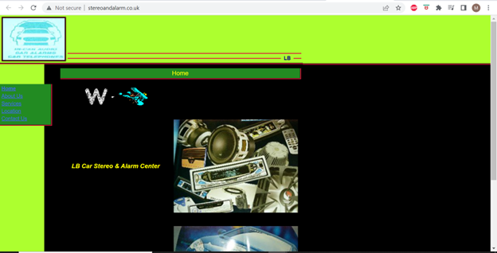

Responsive Redesign Project Context
The purpose of this project was to practice the workflow of redesigning a simple website, learn the skills necessary to analyze and identify flaws in an existing interface, create low-fidelity and high-fidelity prototypes for various screen sizes, and build a responsive website based on those prototypes.
Part 1: Identifying Usability Problems
Subpart 1: Why I chose to redesign this website
The website I chose to redesign was: this website.My redesign of the website can be found here.
Here is a screenshot of the website:

I chose this website because I felt I could make substantial improvements to it because it’s simple, yet poorly designed as the alignment of the boxes are off, the images are extremely grainy and confusing, the font and the font coloration against the color of the background makes it extremely difficult to read, there’s a ton of just blank unused space on the left that makes the whole site off-center and seem unbalanced, and the general color scheme is not appealing.
Subpart 2: Finding Problems
Usability/Efficiency:
• The usability and efficiency of the site is extremely poor• Difficult figuring out which texts are buttons and how to navigate the page
• The address does not link to an actual Google Maps location page of the business
• Not efficient because it takes a while to read the text due to the coloring scheme of the text and background
• The links are often circuitous. The Contact Us link takes you to another page that contains the same link for location. Why duplications? Is it a different location?
• The pictures are incredibly grainy and if they are not, you are left wondering what they are trying to convey.
Learnability:
• Awful learnability• Not clear at all which text is a button/link and which is not
• Need to brute force by trying and clicking on each text/group of words to see if it is a link or not
• The same issues apply to pictures. You do not know if any of the pictures mean anything important or are interactive in any way.
• Often difficult to read what is written in the pictures as they are grainy.
• Quite difficult to tell what the website is about or for. Not clear what the purpose of the website is or what the business does.
Memorability:
• Because the page is so simple, after using it a number of times, it is relatively easy to remember what text is a button/link and what is not a button and is only plain text. The same goes for remembering that all of the images are just still pictures.• The memory required to remember the entire path/tree of navigation on the website is relatively small. Home takes you back to the home page. About Us takes you to another page with some text. The location page takes you to a page with a seemingly hand-drawn local map pointing out where the business is located. Contact Us takes you to a page with a phone number and email and other contact information. Contact Us also has another link to the Location page. The Services page is the most confusing to remember. It essentially takes you to a page with dropdown links, most of which just lead to empty pages with the title of the dropdown option at the top of the page. Definitely unintuitive and not easy to remember. Granted, that is not on the homepage itself so I will not need to worry about fixing that functionality.
• So strictly limiting the analysis to just the homepage—because it is quite austere, albeit poorly designed, it is relatively simple to remember how the links/website works.
Conceptual Model:
• I do not think they had a conceptual model in mind when designing this website.• It does not match any conceptual model I would intuitively or innately have.
• There is nothing that is intuitive to the design other than things are aligned to the left, but even certain things are still misaligned, so that does not entirely hold true.
• It does not make much sense as to why the website stops about 60% of the way as you move horizontally across the page. I cannot think of any conceptual model that assumes that should be the case.
• When this website was created, it was done without any conceptual model in mind in my opinion.
Subpart 3: Accessibility Issues
I agree with the problems that were detected by WAIVE but was surprised it did not detect any problems regarding Contrast Errors as some of the text for me is definitely difficult to read. 4 errors were found by WAIVE. These included the language of the webpage was not identified or the language attribute was invalid, and 3 images were missing alt text. 34 alerts were also found. These included no heading structure, no page regions, and 32 layout tables were used which introduce order and navigation issues. So, I agree with all of the problems that were found. What surprised me is that no contrast errors were found. I found that the text was quite difficult to read, especially the links with the dark blue against the dark green box background against the light green overall background. So, I agree with the problems that WAIVE included, but disagree with the problems it excluded or made no mention of.
Part 2: Virtual Redesign
Subpart 1: Low Fidelity Wireframes for Phone, Tablet, and Desktop


Subpart 2: Visual Design Style Guide

Subpart 3: High Fidelity Prototyping for Phone, Tablet, and Desktop
Part 3: Responsive Redesign
Again, the original website can be found here.Again, my redesign of the website can be found here.